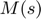
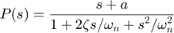
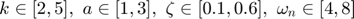
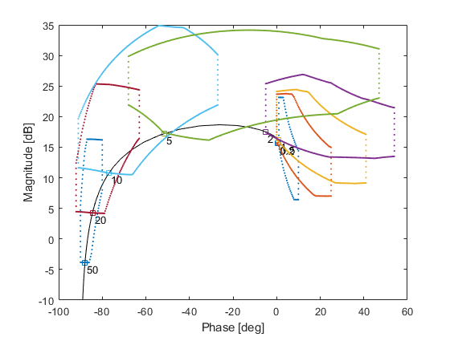
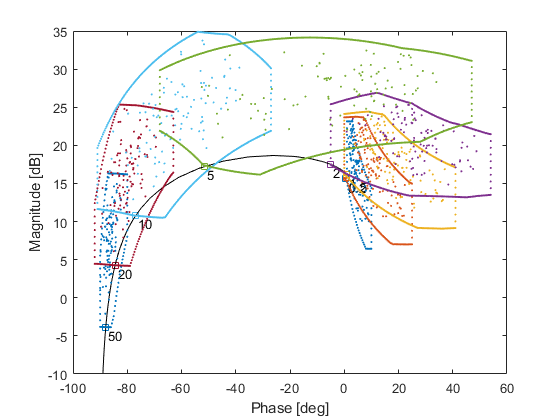
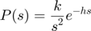
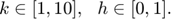
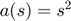
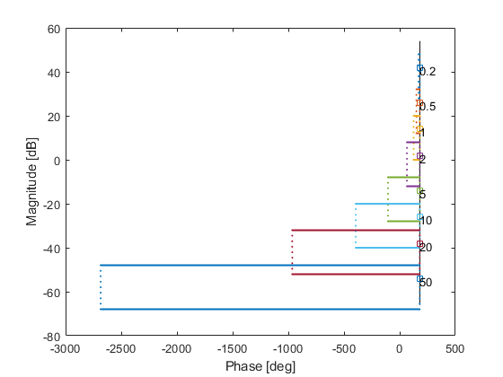
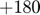

Example: RFF template computation
If an uncertain transfer functions is given in Real Factored Form

a method given in Gutman et. al. (1994) can be used to compute accurate templates in a short time. Note that in the above all parameters are uncertain, and  denotes multiplicative unstructured uncertainty First and second order factors whose gain equals 1 for s=0 are said to be given in direct current or dc-form, and the remaining first and second order factors are said to be in high frequency or hf-form.
Contents
To use the rff method, the qplant must be constructed using qrff elements instead of qpoly elements for the numerator and denumerator.
Exmaple 1:
The plant is given as

with uncertain paraetmers given as

We construct the qpar elements as usual
k=qpar('k',2,2,5,8); a=qpar('a',3,1,3,8); z=qpar('z',0.6,0.3,0.6,8); wn=qpar('wn',4,4,8,8);
Now, we construct num and den as array of qrff objects. The numerator has a gain of k and a first order hf element; the denomerator has a single 2nd order dc element.
num = [qrff('hf',a) qrff('gain',k)]; den = qrff('dc',wn,z); P1 = qplant(num,den);
From this stage we can continue as usual and compute the templates.
w = [0.2 0.5 1 2 5 10 20 50]; P1.cnom; P1.ctpl('rff',w,'accuracy',[1 1]); P1.showtpl
Calculating templates using the Real Factored Form method --> for w=0.2 [rad/sec] --> for w=0.5 [rad/sec] --> for w=1 [rad/sec] --> for w=2 [rad/sec] --> for w=5 [rad/sec] --> for w=10 [rad/sec] --> for w=20 [rad/sec] --> for w=50 [rad/sec]
Note that the fact that the plant is constucted using qrff elements does not prevent template computations via other methods. For exmaple:
P1.ctpl('random',w,'union',1); P1.showtpl
Calculating templates using the random sampling method --> for w=0.2 [rad/s] --> for w=0.5 [rad/s] --> for w=1 [rad/s] --> for w=2 [rad/s] --> for w=5 [rad/s] --> for w=10 [rad/s] --> for w=20 [rad/s] --> for w=50 [rad/s]
However, the rff method cannot be used on qplants constructed using qpoly elements.
Example 2:
The plant is given as

with uncertain paraetmers given as

This time the numerator has a gain k and a delay h, and the denumerator has a certain double integrator. The denumerator thus requires a poly qrff member, which encapsulates the certain polynomial .
k = qpar('k',5,1,10,8); h = qpar('h',0,0,1,8); num = [qrff('gain',k) qrff('delay',h)]; % numerator den = qrff('poly',[1 0 0]); % denumerator P2 = qplant(num,den); P2.cnom; P2.ctpl('rff',w); P2.showtpl
Calculating templates using the Real Factored Form method --> for w=0.2 [rad/sec] --> for w=0.5 [rad/sec] --> for w=1 [rad/sec] --> for w=2 [rad/sec] --> for w=5 [rad/sec] --> for w=10 [rad/sec] --> for w=20 [rad/sec] --> for w=50 [rad/sec]
One can see that the nominal is drawn at the wrong phase:  degrees instead of  degrees. This can be corrected using the command P2.unwrap().
degrees. This can be corrected using the command P2.unwrap().
In the second example a delay is added using a delay rff element. Note that dealys, as well as multiplicative unstructured uncertainty may be inserted both as rff elements and using the qplant methods adelay and auncint. It is suggested that these methods wiil only be used when the plant is not constructed using rff elements.